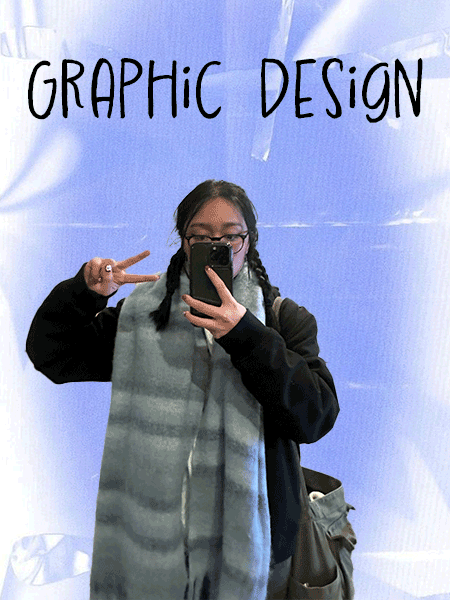

My name is Olivia Nguyen. I am a double major as a graphic design major and an IMT major with a web design concentration. I am interested in using my visual skills in graphic design and combining my technical skills in web design to create a variety of websites and designs for those sites.
I also currently building a portfolio for all my design work. My skills include illustration, Adobe, and proficiency in Vietnamese. Along with this, my hobbies include drawing, dancing, and playing tennis.
I also enjoy watching rom-coms such as: